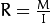
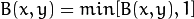
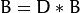

In this chapter, we will learn about histogram backprojection.
It was proposed by Michael J. Swain , Dana H. Ballard in their paper Indexing via color histograms.
What is it actually in simple words? It is used for image segmentation or finding objects of interest in an image. In simple words, it creates an image of the same size (but single channel) as that of our input image, where each pixel corresponds to the probability of that pixel belonging to our object. In more simpler worlds, the output image will have our object of interest in more white compared to remaining part. Well, that is an intuitive explanation. (I can’t make it more simpler). Histogram Backprojection is used with camshift algorithm etc.
How do we do it ? We create a histogram of an image containing our object of interest (in our case, the ground, leaving player and other things). The object should fill the image as far as possible for better results. And a color histogram is preferred over grayscale histogram, because color of the object is a better way to define the object than its grayscale intensity. We then “back-project” this histogram over our test image where we need to find the object, ie in other words, we calculate the probability of every pixel belonging to the ground and show it. The resulting output on proper thresholding gives us the ground alone.
1. First we need to calculate the color histogram of both the object we need to find (let it be ‘M’) and the image where we are going to search (let it be ‘I’).
import cv2
import numpy as np
from matplotlib import pyplot as plt
#roi is the object or region of object we need to find
roi = cv2.imread('rose_red.png')
hsv = cv2.cvtColor(roi,cv2.COLOR_BGR2HSV)
#target is the image we search in
target = cv2.imread('rose.png')
hsvt = cv2.cvtColor(target,cv2.COLOR_BGR2HSV)
# Find the histograms using calcHist. Can be done with np.histogram2d also
M = cv2.calcHist([hsv],[0, 1], None, [180, 256], [0, 180, 0, 256] )
I = cv2.calcHist([hsvt],[0, 1], None, [180, 256], [0, 180, 0, 256] )
2. Find the ratio . Then backproject R, ie use R as palette and create a new image with every pixel as its corresponding probability of being target. ie B(x,y) = R[h(x,y),s(x,y)] where h is hue and s is saturation of the pixel at (x,y). After that apply the condition .
h,s,v = cv2.split(hsvt)
B = R[h.ravel(),s.ravel()]
B = np.minimum(B,1)
B = B.reshape(hsvt.shape[:2])
3. Now apply a convolution with a circular disc, , where D is the disc kernel.
disc = cv2.getStructuringElement(cv2.MORPH_ELLIPSE,(5,5))
cv2.filter2D(B,-1,disc,B)
B = np.uint8(B)
cv2.normalize(B,B,0,255,cv2.NORM_MINMAX)
4. Now the location of maximum intensity gives us the location of object. If we are expecting a region in the image, thresholding for a suitable value gives a nice result.
ret,thresh = cv2.threshold(B,50,255,0)
That’s it !!
OpenCV provides an inbuilt function cv2.calcBackProject(). Its parameters are almost same as the cv2.calcHist() function. One of its parameter is histogram which is histogram of the object and we have to find it. Also, the object histogram should be normalized before passing on to the backproject function. It returns the probability image. Then we convolve the image with a disc kernel and apply threshold. Below is my code and output :
import cv2
import numpy as np
roi = cv2.imread('rose_red.png')
hsv = cv2.cvtColor(roi,cv2.COLOR_BGR2HSV)
target = cv2.imread('rose.png')
hsvt = cv2.cvtColor(target,cv2.COLOR_BGR2HSV)
# calculating object histogram
roihist = cv2.calcHist([hsv],[0, 1], None, [180, 256], [0, 180, 0, 256] )
# normalize histogram and apply backprojection
cv2.normalize(roihist,roihist,0,255,cv2.NORM_MINMAX)
dst = cv2.calcBackProject([hsvt],[0,1],roihist,[0,180,0,256],1)
# Now convolute with circular disc
disc = cv2.getStructuringElement(cv2.MORPH_ELLIPSE,(5,5))
cv2.filter2D(dst,-1,disc,dst)
# threshold and binary AND
ret,thresh = cv2.threshold(dst,50,255,0)
thresh = cv2.merge((thresh,thresh,thresh))
res = cv2.bitwise_and(target,thresh)
res = np.vstack((target,thresh,res))
cv2.imwrite('res.jpg',res)
Below is one example I worked with. I used the region inside blue rectangle as sample object and I wanted to extract the full ground.